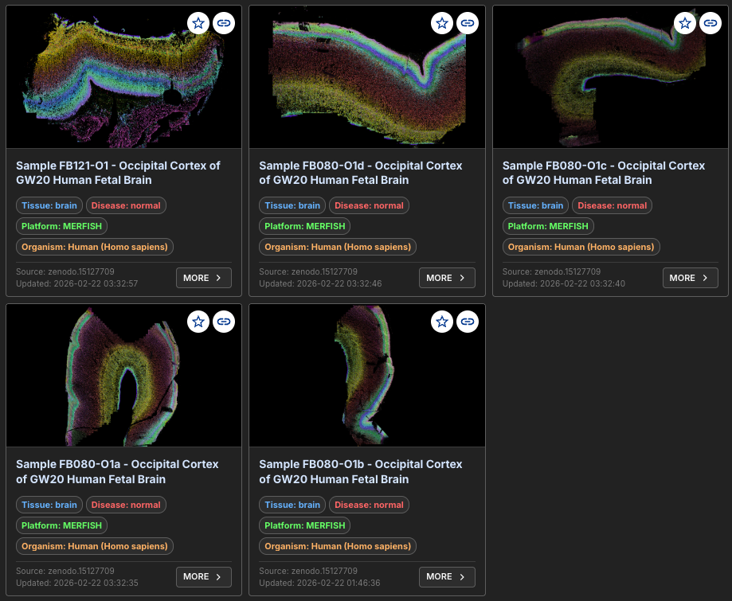

Human Cortex Multi‑Sample Spatial Factor Analysis Tutorial¶
This tutorial demonstrates how to run multi‑sample FICTURE analysis and package results with individual commands, starting from the raw data.
Prefer one command?
run_together runs this whole analysis (SGE conversion, one joint FICTURE model, and packaging) from a sample sheet. After downloading the data, from ${work_dir}:
1 2 3 4 5 6 7 8 9 10 11 12 13 | |
With Docker, run the same command as docker run --rm -v ${work_dir}:/data -w /data hyunminkang/cartloader:latest run_together ...; -w /data makes the sheet's relative paths resolve inside the container.
Each sample is packaged as out/walsh2025-human-cortex-fb080-O1/cartl/walsh2025-human-cortex-fb080-O1-<sample_id>/, next to a multi-catalog.yaml that links them; --s3-upload publishes the whole collection. Its default feature filters differ slightly from the commands below: Blank-* probes are dropped at ingest, and MT- genes are left out of the factor models.
Input Data¶
This tutorial uses a series of five human cortex ST datasets from Walsh et al. Nature 2025, generated by MERFISH.
Data Access¶
Follow the commands below to download the source data (about 8 GB to download and 29 GB unzipped).
1 2 3 4 5 6 7 8 9 10 11 12 13 14 15 | |
Each sample then has its own folder, raw/<sample_id>/, holding detected_transcripts.csv, cell_metadata.csv, and cell_by_gene.csv.
File Format¶
detected_transcripts.csv
1 2 3 4 | |
- Column 1: Unique numeric index for each transcript within a field of view (non-consecutive, ascending).
barcode_id: Zero-based index of the transcript barcode in the codebook; forms a composite key withfov.global_x: Transcript x coordinates (µm) in the experimental region; may be negative due to alignment.global_y: Transcript y coordinates (µm) in the experimental region; may be negative due to alignment.global_z: Zero‑based z‑position index.x: The x-coordinate of the transcript (µm), within the coordinate space of the field of view.y: The y-coordinate of the transcript (µm), within the coordinate space of the field of view.fov: Zero-based field of view index; forms a composite key withbarcode_id.gene: Gene name.transcript_id: Unique identifier for the transcript.cell_id: Unique identifier for cell.
Define ID and Parameters¶
1 2 3 4 5 6 7 8 | |
The raw coordinates are already in µm, so no scaling is needed.
Example Runs¶
Choose Local or Docker Setup¶
Choose One Mode
This tutorial supports two execution modes:
- local runs (
cartloaderinstalled on your machine) - Docker runs (
docker run hyunminkang/cartloader:latest ...)
Choose one setup mode and complete that setup only.
After setup, both modes use the same pipeline commands via the cartloader_cmd and aws_cmd wrappers.
Set Up Environment
1 2 3 4 5 6 7 8 9 10 | |
No tool paths needed
Once submodules/build.sh has run (see Installation), every CartLoader command finds spatula, punkst, tippecanoe, pmtiles, and pmpoint in the submodules/ directory of the repository, and the default color map at assets/default_color_map.tsv. Pass --spatula, --ficture2 (the punkst repository directory, which contains bin/punkst), --tippecanoe, --pmtiles, or --cmap-file only to use a different build or file. upload_aws runs the aws CLI from your PATH (--aws to override).
Define command wrappers
1 2 3 4 5 6 | |
Set Up Environment
1 2 3 4 5 6 7 8 9 | |
Using the Docker image
- The image's entry point is
cartloader: whatever follows the image name is acartloadersubcommand and its options (docker run --rm -v ${work_dir}:/data hyunminkang/cartloader:latest <command> [options]). - Paths passed to the command are container paths: with
-v ${work_dir}:/data, a host file${work_dir}/raw/x.csvis/data/raw/x.csv. - Every tool is built into the image, so no tool-path options are needed.
- Uploads need credentials inside the container: mount them read-only, e.g.
-v ${HOME}/.aws:/root/.aws:rofor AWS. latestis the most recent release; for reproducible runs use a dated tag (e.g.hyunminkang/cartloader:20261007-1432).
Define command wrappers
1 2 3 4 5 6 7 8 9 10 11 12 13 14 15 16 17 18 19 20 | |
Warning
All remaining commands are identical for local and Docker runs. Paths given to cartloader_cmd and aws_cmd start with ${data_root} (the work directory as the tools see it); plain shell commands, which run on your machine, use ${work_dir}.
SGE Format Conversion¶
Warning
Convert each sample transcript file to CartLoader SGE format. Commands below process all five samples in a loop.
1 2 3 4 5 6 7 8 9 10 11 12 13 14 15 | |
Tip
Raw coordinates are already in micrometers. Use this only if you do not need SGE visualization or density/feature-based filtering. It runs directly in your shell, in either mode.
1 2 3 4 5 6 7 8 9 10 11 | |
Prepare Input List¶
Create input.tsv (tab-separated, one sample per line). The paths in it are read by run_ficture2_multi, so they start with ${data_root}.
1 2 3 4 5 6 7 8 9 | |
Example Input List: input.tsv
The TSV has one sample per line, no header, and two columns (in Docker mode the paths begin with /data).
1 2 3 4 5 | |
1st Column(required, str): Unique sample identifier (avoid whitespace).2nd Column(required, str): Path to the transcript-indexed SGE file inCartLoaderformat, generated from the SGE format conversion step above.
Multi-Sample FICTURE Analysis¶
Train cohort-level LDA models (per width and factor setting), decode each sample, and write the JSON manifests.
The shared models are written to ficture2/, each sample's results to ficture2/samples/<sample_id>/, and the manifest that links them to ficture2/ficture.multi.params.json. See details in run_ficture2_multi.
1 2 3 4 5 6 7 8 | |
Multi-Sample Asset Packaging¶
Package every sample into web-ready PMTiles and catalogs. run_cartload2_multi finds the samples and the shared models in ficture2/ficture.multi.params.json, so it needs no input list.
Each sample is written to its own self-contained directory, cartload2/${COLLECTION_ID}-<sample_id>/ (with its catalog.yaml), and the shared factor files (model, colors, DE, UMAP) and multi-catalog.yaml, which links the samples, to cartload2/. See details in run_cartload2_multi.
1 2 3 4 5 6 | |
Upload to AWS¶
Upload each sample's directory, then multi-catalog.yaml and the shared files it lists, into one S3 directory for the collection. See upload_aws for options.
1 2 3 4 5 6 7 8 9 10 11 12 13 14 15 | |
Each sample directory is self-contained, so to share a single sample, run only its upload_aws command.
Output Summary¶
-

View/Explore¶
The outputs are available in CartoScope.
See output details in the reference pages for run_ficture2_multi and run_cartload2_multi.